- Motivation
- Quantitative analysis of molecular simulations
- The problem with current MSMs
- What's the loss function?
- A variational formulation of MSMs
- Generalized matrix Rayleigh quotient
- Pursuing the optimal model
- Optimization of a noisy, stochastic, and expensive function over an awkward search space
Optimal Markov Models
Formulation & Pursuit
Robert T. McGibbon
September 29, 2014
Overview
Motivation
Quantitative analysis of molecular simulations
Experiments Can't Do It Alone
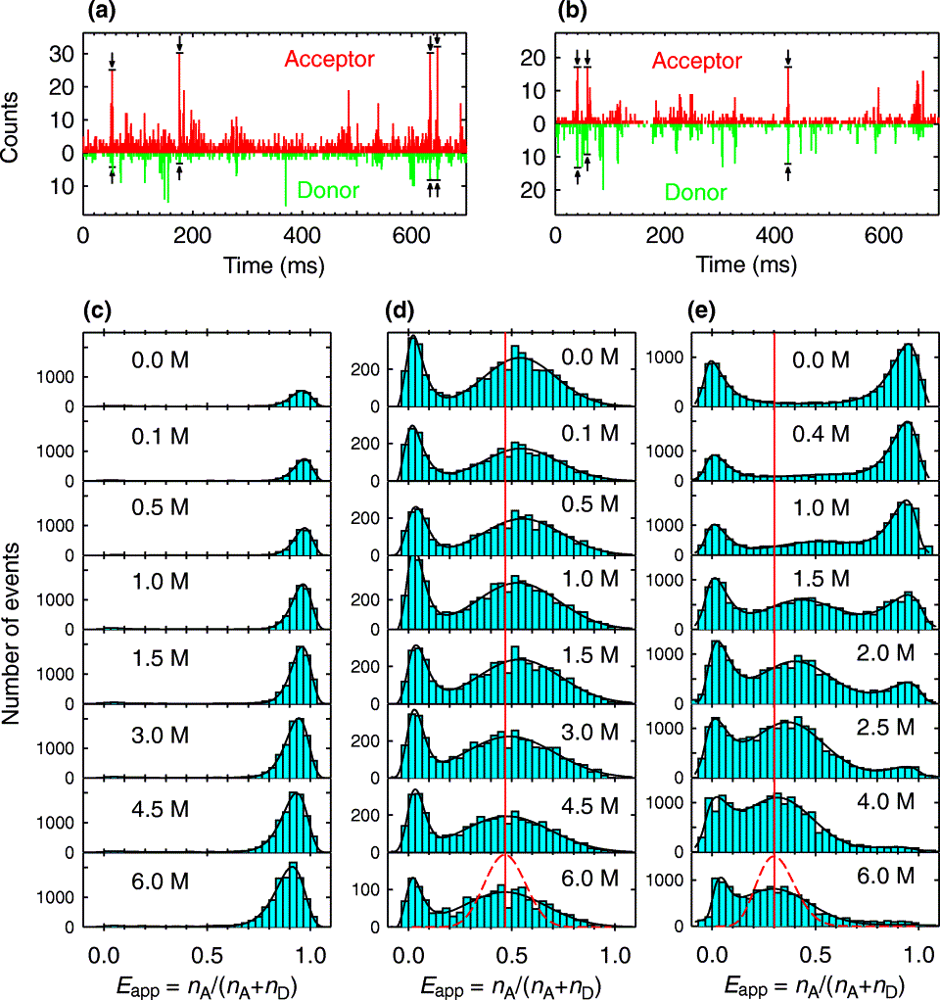 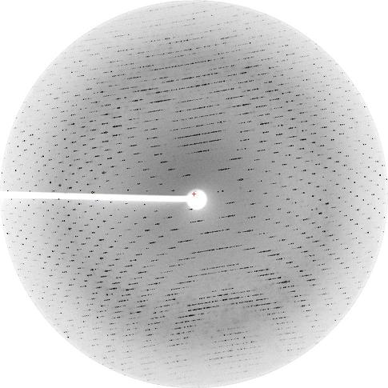 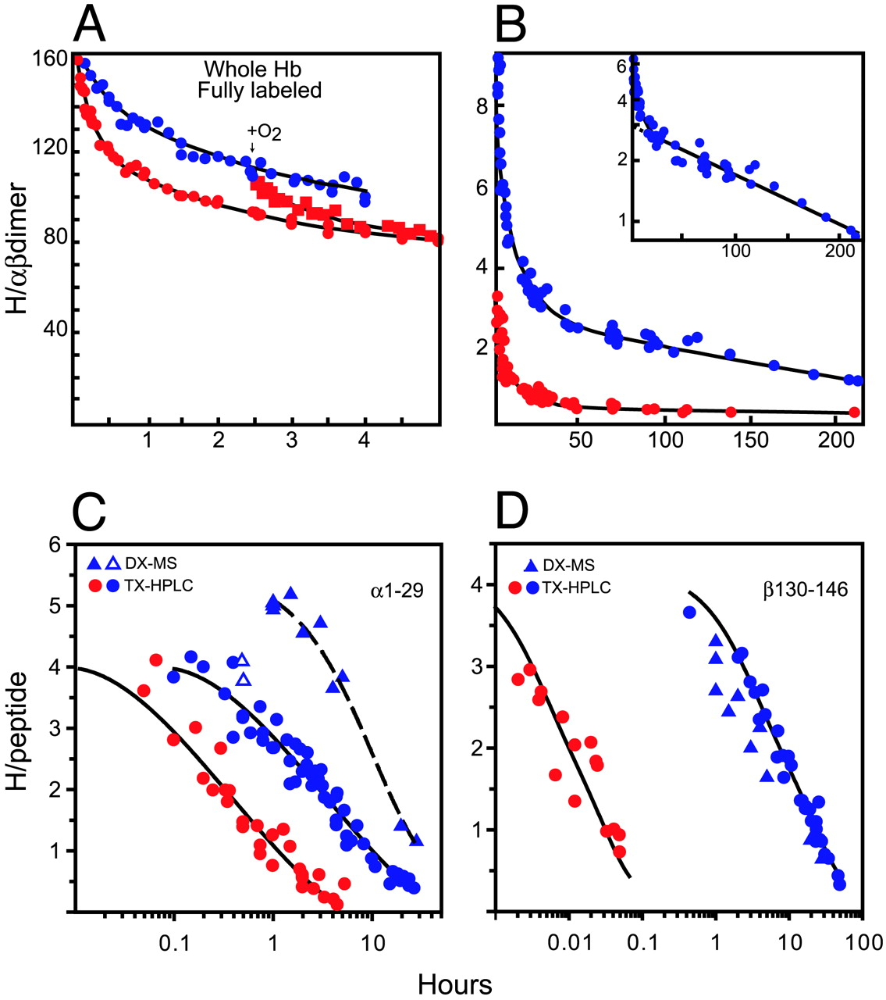 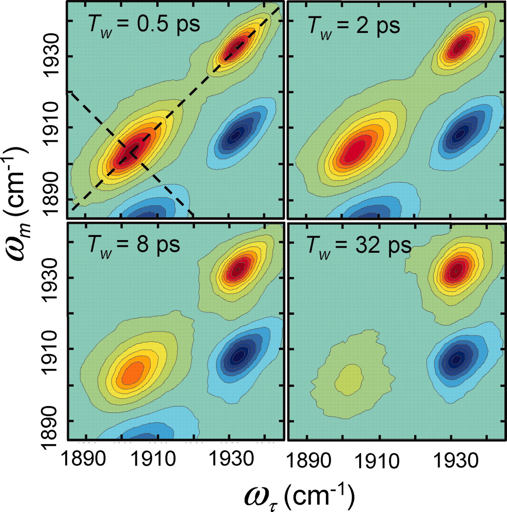
The relevant atomic physics is settled*
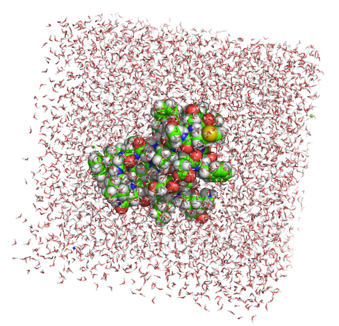
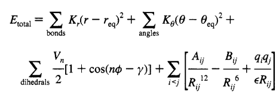
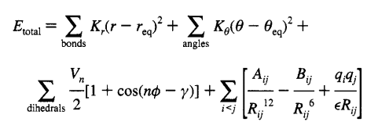
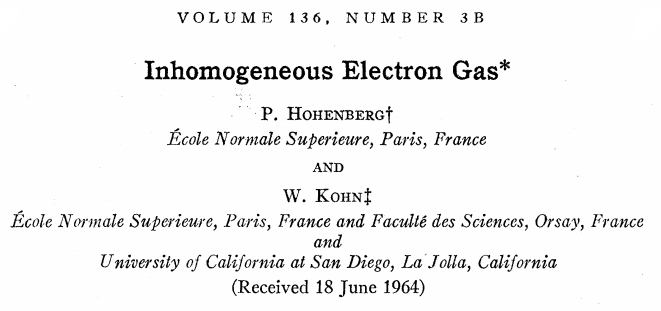
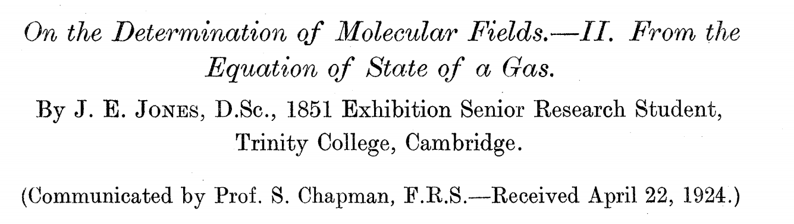
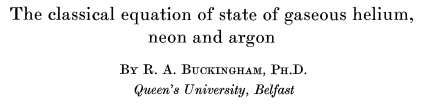
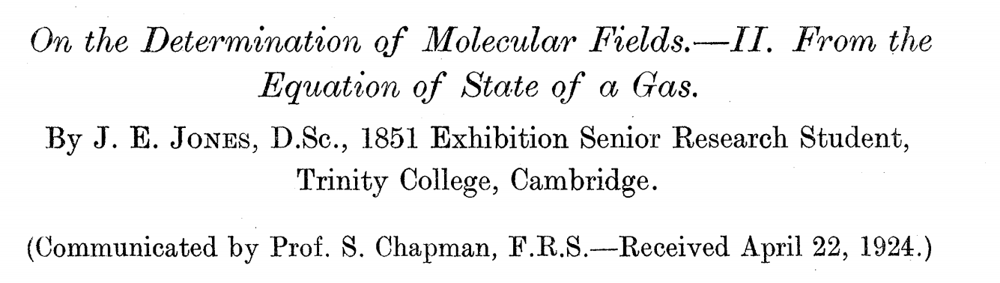
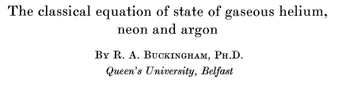
Simulations are no longer rate limiting*
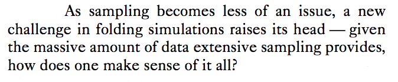
In 10 years, GPUs will likely be 100-1000x more powerful!
Why aren't we there yet with Markov modeling?
MSMs lack systematic parameter selection
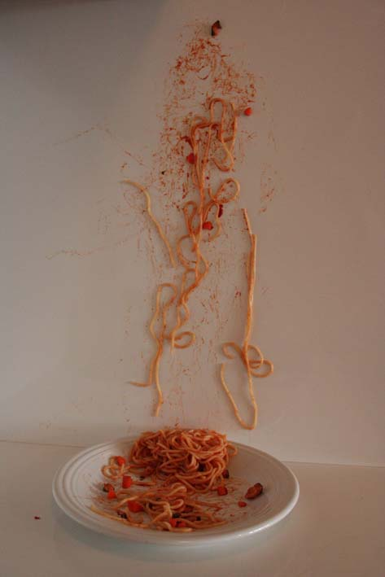
- What featurization?
- Cartesian, dihedrals, contact distances?
- Dimensionality Reduction?
- PCA, tICA?
- What clustering method?
- k-centers, k-means, hierachical?
- How many states?
Lack of systematic parameter selection
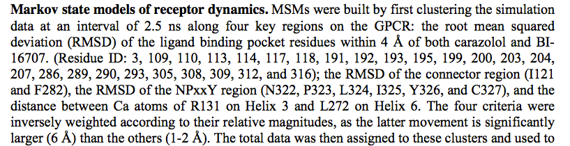
Lack of systematic parameter selection
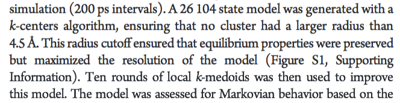
Lack of systematic parameter selection
Optimal MSMs
A variational formulation via a generalized matrix Rayleigh quotient
The Propagator
Low-rank approximations
How do we compress the propagator?
Low-rank approximations
How do we compress the propagator?
Low-rank approximations
How do we compress the propagator?
Low-rank approximations
How do we compress the propagator?
- The first
$m$ eigenfunctions,$\{\phi_1, \ldots, \phi_m\}$ would yield the optimal rank-$m$ approximation to the dynamics.- These are the slow degrees of freedom.
- The long timescale dynamical processes.
- The reaction coordinate(s).
Problem statement
Principled parameterization of low-rank models of dynamics
- Using some ansatz eigenfunctions
${\color{unknown}f}=\{f_i(\cdot)\}_{i=1}^m$ , and some$\color{data}\text{MD data}$ , - Develop an
optimization problem (learning objective),$$ {\color{learned}f^*}= \operatorname*{argmax}_{\color{unknown}f}\; \underbrace{\operatorname{Score}}_\text{Find me!}[{\color{unknown}f}; {\color{data}\text{data}}] $$ whose solution,${\color{learned}f^*}$ , given infinite$\color{data}\text{MD data}$ , would be the first$m$ eigenfunctions of$\fcolorbox{black}{white}{\(\mathcal{P}(\tau)\)}$ .
Variational theorem for eigenspaces
Linear variation with basis functions
Given basis functions, $\{\varphi_a\}$, let $f_i(x) = \sum_a {\color{unknown}A_{ia}}\, \mu(\mathbf{x}) \varphi_a(\mathbf{x})$.
$$
\begin{align}
{\color{data}C_{ab}} &= \langle \mu \varphi_a, \mathcal{P}(\tau) \circ \mu \varphi_b \rangle_{\mu^{-1}}
\approx \overbrace{\frac{1}{T} \sum_t^T \varphi_a(\mathbf{x}_t) \varphi_b(\mathbf{x}_{t+\tau})}^{\color{data}\text{from MD data}} \\
{\color{data}S_{ab}} &= \langle \mu \varphi_a, \mu \varphi_b \rangle_{\mu^{-1}} \approx \frac{1}{T} \sum_t^T \varphi_a(\mathbf{x}_t) \varphi_b(\mathbf{x}_t)
\end{align}
$$
$$
\begin{align}
\mathcal{R}_\mathcal{P}[f] &= \operatorname{Tr}\left[P(f)\,Q(f)^{-1}\right] \\
&= \operatorname{Tr}\left[({\color{unknown}A}^T{\color{data}C}{\color{unknown}A})
({\color{unknown}A}^T{\color{data}S}{\color{unknown}A})^{-1}\right]
\end{align}
$$
Different bases,
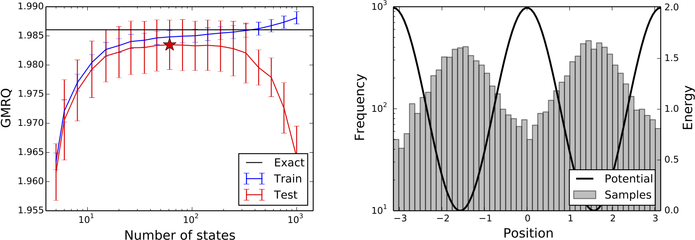
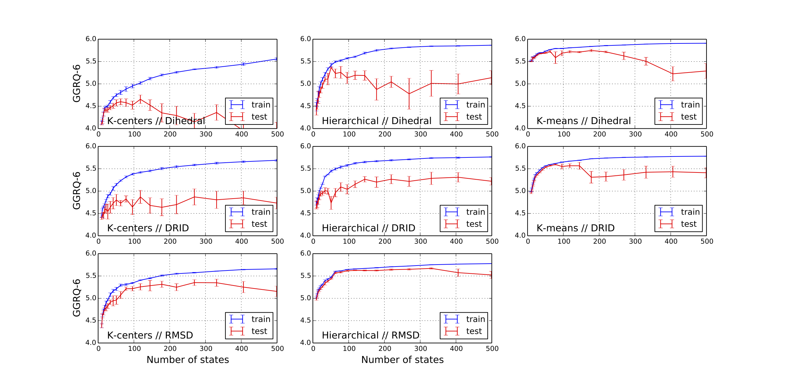
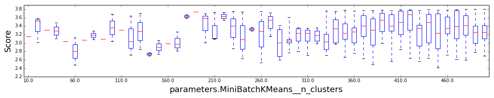
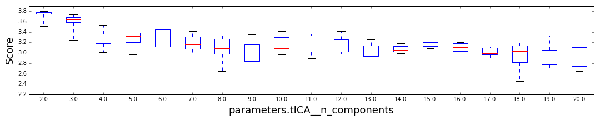
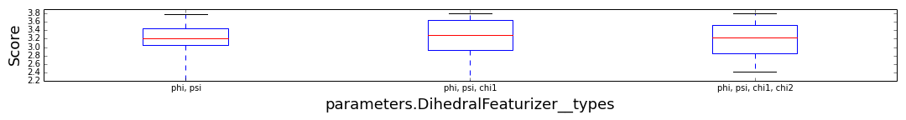
MSMs and tICA
Different bases, same objective
Using basis functions, we now have a "standard" problem.
- If
$\varphi_m(\mathbf{x})$ are linearly independent geometrical features:- This is tICA, and
${\color{learned}A^*}$ are the tICs.
- This is tICA, and
- If we have
$m$ "states" and$\varphi_m(\mathbf{x}) = \mu^{-1}(\mathbf{x}) \cdot \mathbf{1}_{\mathbf{x} \in S_m}$ - This is an MSM, and
${\color{learned}A^*}$ are the MSM eigenvectors.
- This is an MSM, and
Connections with other fields
- Well known in electronic structure theory of excited states
- Band structure of semiconductors, theory of maximally localized Wannier functions
- Kernel Fisher discriminant analysis (LDA/FDA)
Separate training and testing
- "As noticed in the early 30s by Larson, training an algorithm and evaluating its statistical performance on the same data yields overly optimistic results."
- Our optimization learns
${\color{learned}A^*}$ from one$\color{data}\text{data set}$ , so we need to test it on a$\color{green}\text{different data set}$ .
MSMs can overfit
Finding the slow eigenvector on a double-well potential
Pursuing the optimal model
Optimization of a noisy, stochastic, and expensive function
Optimizing the cross-validated GMRQ
- Independent variables:
- Featurization (e.g. dihedrals, contacts, ...)
- Preprocessing (e.g. tICA, PCA, None)
- MSM clustering method (e.g. KCenters, KMeans, ...)
- Number of MSM states
- Optimization methods:
- Grid search
- Random search
- Bayesian methods (e.g. GPs, TPE)
Octanaline MSMs
Grid searching different featurization and clustering
Fs Peptide folding
Search Space, ($\tau=50\; \text{ps},\; n_{timescales}=3$)
$$
\newcommand\T{\Rule{0pt}{1em}{.3em}}
\begin{array}{|c|c|}
\hline \textbf{Category} & \textbf{Options} \\\hline
\text{Featurization} & \{\phi,\psi\}, \{\phi, \psi, \chi_1\}, \{\phi, \psi, \chi_1, \chi_2\} \\\hline
\text{Preprocessing} & \text{PCA, tICA, None} \\\hline
\text{# of tICs/PCs} \T & [2, 20] \\\hline
\text{tICA } \gamma \T & \{0, 10^{-7}, 10^{-5}, 10^{-3}, 10^{-1}\} \\\hline
\text{tICA weighting} & \{\text{True, False}\} \\\hline
\text{Clustering} & \text{$k$-centers, minibatch $k$-means} \\\hline
\text{# of states} & [10, 500] \\\hline
\end{array}
$$
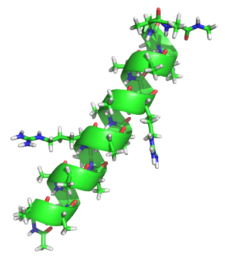
Fs Peptide folding
Fs Peptide folding
Best model
$$
\newcommand\T{\Rule{0pt}{1em}{.3em}}
\begin{array}{|c|c|}
\hline \textbf{Category} & \textbf{Options*} \\\hline
\text{Featurization} & \{\phi, \psi, \chi_1, \chi_2\} \\\hline
\text{Preprocessing} & \text{tICA} \\\hline
\text{# of tICs} \T & 2 \\\hline
\text{tICA } \gamma \T & 0 \\\hline
\text{tICA weighting} & \text{True} \\\hline
\text{Clustering} & \text{m.b. $k$-means} \\\hline
\text{# of states} & 480 \\\hline
\end{array}
$$

Doublewell MSMs
from mixtape.cluster import NDGrid
from sklearn.pipeline import Pipeline
from mixtape.datasets import load_doublewell
from sklearn.grid_search import GridSearchCV
from mixtape.markovstatemodel import MarkovStateModel
ds = load_doublewell(random_state=1)
strided = [t[::100] for t in ds['trajectories']]
pipeline = Pipeline([
('grid', NDGrid( min=-np.pi, max=np.pi)),
('msm', MarkovStateModel(n_timescales=1, reversible_type='mle', ergodic_trim=True)),
])
grid = GridSearchCV(pipeline, param_grid=[
{'grid__n_bins_per_feature': [s], 'msm__n_states': [s]} for s in n_states
], cv=5, return_train_scores=True, verbose=10)
grid.fit(strided)
print(grid.grid_scores_)
Takeaways
- Systematic evaluation and optimization of MSMs is possible
- Incl. different clusterings, featurizations, protocols
- Overfitting is real. Systematic gap between training and testing performance.
- Optimal number MSM "states" is driven by the statistics, not just the physics.
- With tICA,
$n_{states} < 1000$ , MSM speed is not an issue
More questions?
Thanks everyone! Especially Vijay, Christian.